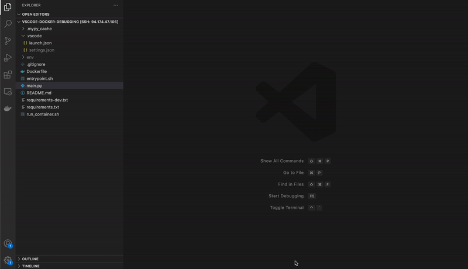

Docker has become ubiquitous in ML applications in the last few years. It can enable easy collaboration between engineers with different hardware — as well as easing the transition from prototyping on personal laptops to compute clusters in production. On the flip side, it introduces an extra layer of complexity for engineers to work with when developing and maintaining productionised models.
In my professional work, I’ve found debugging to be one of the things made harder by this extra layer of complexity. In this post I’m going to outline my current setup with VSCode and debugpy that greatly simplifies this process when applied to a model training application.
Why do we need this?
When debugging code, we want to be able to inspect its environment at runtime as accurately as possible. Any deviation from this can lead to fixes that plainly don’t work in the runtime environment.
Whilst getting to grips with Docker, my debugging process would generally entail recreating the scaffolding around the Python script that I wanted to inspect in my local development environment, and then debugging that script directly. In model training applications that contain bash scripts, multiple entrypoints and use of environment variables, this can quickly add a large development overhead. With this added complexity comes the increased chance of errors creeping in, rendering the whole process slow and frustrating.
So how do we avoid this? We need a debugging system that can interact with Docker, and let our code run as it was designed to!
The Solution
What worked best in the end for me is a debugger that can connect to a Docker container where your model training application is running, and directly inspect the environment of a given Python script.
This is where debugpy comes in!
Previously known as ptvsd, this package is developed by Microsoft specifically for use in VSCode with Python. It implements all of the common debugging tools you would expect, as well as allowing for attaching to remote environments, such as Docker containers or even remote machines via SSH.
As an aside, debugpy implements the Debug Adapter Protocol (DAP), which is a standardised way for development tools to communicate with debuggers.
Using debugpy with Docker containers is wonderfully simple, and requires 3 distinct steps. I’ll dive into each of these in turn, before demonstrating the whole process afterwards.
- Configuring debugpy in Python
- Configuring the connection to the Docker container
- Setting up breakpoints
1. Configuring debugpy in Python
In the script you would like to debug, the following snippet should be added before any other code.
import debugpy
debugpy.listen(("0.0.0.0", 5678))
print("Waiting for client to attach...")
debugpy.wait_for_client()This will setup debugpy to listen on port 5678 for a client to attach, and will also pause the execution until a client connects via that port.
2. Configuring the connection to the Docker container
Now we have our Python script configured, we need to make sure the VSCode debugger client can connect to debugpy when it is running inside a Docker container.
Firstly, when you run your Docker container, the port that debugpy is listening on must be mapped to a local port
docker run \
-p 5678:5678 \ # map container port to local port
temp-containerSecondly, we need to create a launch.json file to configure how the local VSCode debugging client will run. This minimal example tells the debugger to attach to port 5678, which will be mapped to the Docker port of the same number when we run the container.
{
"version":"0.2.0",
"configurations":[
{
"name":"Python: Docker Attach",
"type":"python",
"request":"attach",
"connect":{
"host":"localhost",
"port":5678
},
"pathMappings":[
{
"localRoot":"${workspaceFolder}",
"remoteRoot":"."
}
]
}
]
}3. Setting up breakpoints
I was surprised when I first tried this that when you set breakpoints via the VSCode UI on the local version of a Python script, that will correspond to the copied scripts that run inside your Docker container! Pure wizardry from VSCode.
In addition, you can also use debugpy.breakpoint() to explicitly set breakpoints via the debugpy API. An additional benefit of this is that these calls will be ignored if you exclude the debugpy configuration mentioned in step (1), providing a quick way of temporarily removing debugging.
Debugging in action
You should be good to go! The steps to debug are:
- Add breakpoints in the UI
- Rebuild and run the Docker container
- Connect the debugger

The full code used for this example can be found below. Happy debugging! 😃
Links
- debugpy Github: https://github.com/microsoft/debugpy
- Docker run reference: https://docs.docker.com/engine/reference/run/